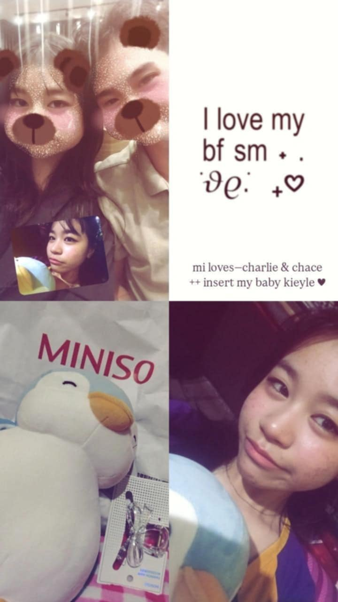
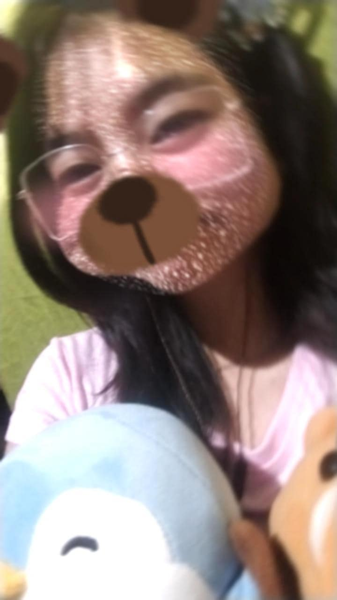
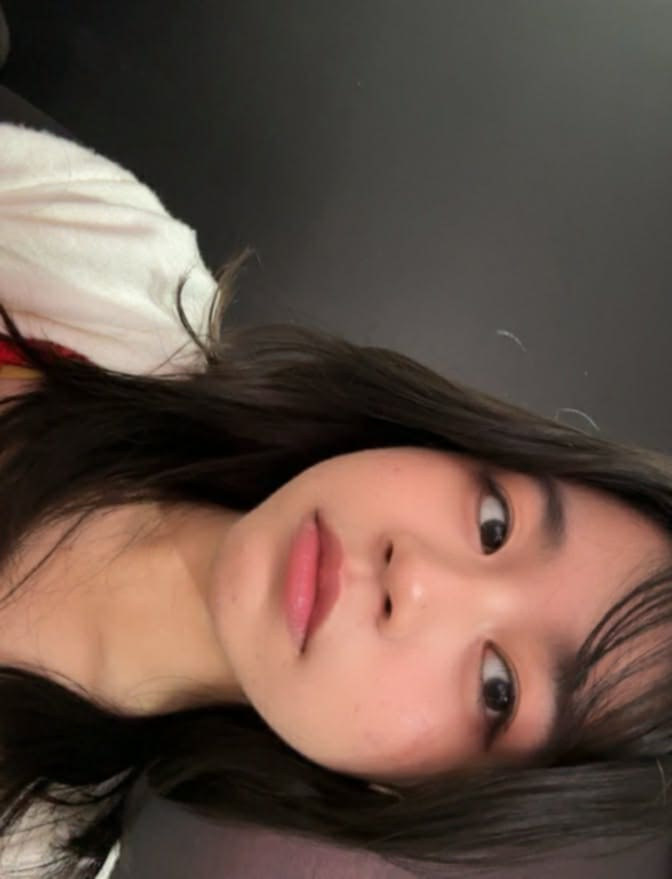

Happy First Anniversary Babyyyy ko😚😚, It's been a year since I confessed and many things happened since then but one thing remained constant—at the end our story as teenagers, I'll one day meet you in front of the altar and build our own family, I swear to make it happen as it is my intention from the very beginning I approached you that day.
Let's go back in time muna babyyy, our story of how we unknowingly bumped into each others life. It all started in January, yesss our birth month, I'm just being me with my some random moments when you suddenly caught my attention with your very smile and laughter, I didn't really pay that much attention in our class happenings that's why when I got a glimpse of your smile, I felt something I'm not even sure about. I ignored that feeling and continued to live life with my hobbies and my randomness, but as day goes by I'm starting to look for you even more, especially since we're practicing for our festival dance. Then one day, when I'm scrolling on FB reels, I found this one content creator who always had a banat on palambing and such, until I started to think of doing that too.
As days goes by and our festival dance performance is near, I secretly hold onto this feeling I can't deny anymore. Until one day, One of your friends found out that I liked you, she even dare me to confess to you on valentine's day and I agreed, but I couldn't gather the courage to do so when that day arrived, I'm so nervous that day. When I got home, I regretted chickening out and so I messaged you, asking for a secret message but I'm not even sure if I'll be able to do it. Monday arrives and class ended, all I've been thinking that day is whether I'll be able to do it or not, but my friends and yours pushed me to do it, they gave me one reason to "If hindi mo gagawin ngayon, kelan mo balak gawin", that made me move and even though I'm so nervous, I asked you to talk somewhere private. I gave it my all and showed how serious and sincere I am, I'm long prepared to be rejected but you gave me a chance to know you more and build the foundation we have right now—trust and our bonds.
We built our connection step by step, slowly but surely, we took our time knowing each other. Our relationship is certainly not rushed and I fully trust the foundation we built, it is something we put our effort, time and sincerity. We've gone through many tough days already but that only made us stronger, that only made me love you more, that made me see parts of you I didn't know before, that made me want to cherish, love, understand, and stay with you more.
I'll love and stay with you more as we go through life together babyyyy, we'll make more memories for another year, our second anniversary will come by before we know it, we'll go through many more anniversary together babyyy ko. Don't worry about what you show me babyyy ko, it doesn't make me lose interest, don't worry about how you treat me because of your bad days and moods, it doesn't make me care less, don't worry about anything babyyy ko, I'll handle you with much care and love with everything you're throwing at me.
Happy Anniversary again babyyyy ko, I love youuuu so muchhh babyyyy. Your happiness is also my happiness, if you're sad then I'm more sad, if you're hurt then I'm more hurt, I cared about you babyyy ko, you're very important to me. I love youuuu babyyy ko, I love youuuu so muchhh. Miss napo kitaaa, miss na miss na kitaaa, I miss youuuu so muchhh babyyy ko
I love youuuu babyyy
I love youuuu so muchhh babyyyy ko
I love youuuu babyyyyy ko
Mahal na Mahal kitaaa babyyy
Mahal na Mahal na Mahal po kita babyyy ko